Standard operating procedure SOP-02Scanning transmission electron microscopy
STEM alignment
Probe setup, Ronchigram alignment, aberration correction, detectors and final focus on a probe-corrected microscope.
SOP-02, version 1.0, October 2026 Follows SOP-01 TEM direct alignment Figures computed with TEM-view
Seeing with ElectronsTEM-view · Advanced-EM
SOP-02 STEM alignmentScope and preparation
Scope and preparation
This procedure sets up a focused probe for atomic-resolution STEM on a microscope with a probe aberration corrector. It assumes the gun is aligned and the specimen is at the eucentric height (SOP-01, steps 1 and 3). Without a corrector, follow the same steps but skip step 3 and use a smaller convergence angle.
Step
Adjustments
Checked with
1
Probe setup
Convergence angle (condenser aperture), spot size, beam current
Screen current or Faraday cup
2
Ronchigram
Probe focus (C1), Ronchigram center, condenser aperture position
Ronchigram of amorphous film
3
Aberration correction
A1, B2, A2, C3, A3 and higher orders
Corrector software; Ronchigram
4
Detectors
Camera length, detector contrast and brightness
Collection angles; image histogram
5
Final focus and stigmation
C1 focus, probe stigmator (A1)
STEM image of a crystal on a zone axis
Before you start
SOP-01 steps 1 and 3 are complete: gun aligned, specimen at eucentric height.
The specimen has a thin amorphous area (support film or specimen edge) close to the area of interest.
The crystal you will image is tilted to the zone axis, or close to it.
The Ronchigram camera and the STEM detectors are available and their protection settings are on.
Terms used
The convergence semi-angle α is the half-angle of the cone of the probe, set by the condenser aperture. The Ronchigram is the shadow image of the specimen formed in the far field of a stationary probe. Aberrations are named as in most corrector software: C1 defocus, A1 two-fold astigmatism, B2 axial coma, A2 three-fold astigmatism, C3 spherical aberration, A3 four-fold astigmatism.
Typical settings
Setting
Uncorrected
Probe-corrected
Convergence semi-angle
8 to 12 mrad
20 to 30 mrad
Probe current, imaging
10 to 50 pA; less for beam-sensitive specimens
HAADF inner angle
At least 3 × the convergence semi-angle (often 60 to 90 mrad)
ABF annulus
About α/2 to α
Caution. Reduce the beam current or the camera exposure before viewing the Ronchigram over vacuum or a hole. A focused probe can saturate or damage the camera.
Note. Corrector software, knob names and detector names differ between manufacturers. Where this guide and your facility's procedure or the manufacturer's manual disagree, follow the facility and the manufacturer.
Seeing with Electrons · TEM-view2
SOP-02 STEM alignmentSteps 1 and 2 of 5
Step 1
Probe setup
Switch to STEM mode (probe mode) and select the condenser aperture for the convergence semi-angle you need.
Select the spot size, and check the probe current on the screen or with a Faraday cup.
Blank the beam or move to a thin area before continuing.
Step 2
Ronchigram: focus and centering
Move a thin amorphous area under the probe, stop the scan, and view the Ronchigram on the camera.
Away from focus, the Ronchigram is a magnified shadow image of the specimen (Fig. 6a, 6b). Change the probe focus (C1) toward focus: the shadow image magnification increases toward the center.
Near focus, the center of the Ronchigram becomes a region of nearly uniform contrast. Set the focus so that this region is as large as possible.
Center this region in the field of view with beam tilt (on some instruments, the Ronchigram center or coma-free alignment).
Center the condenser aperture on the same point.
Result. Near focus, the uniform central region and the aperture edge are concentric.
Note. The two sides of focus can be told apart by the direction in which the shadow image moves when the probe is moved across the specimen. Overfocus and underfocus move it in opposite directions.
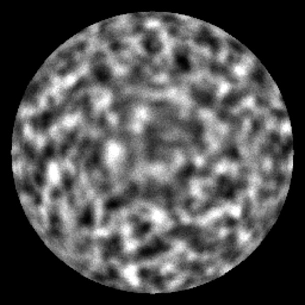
Fig. 6a. 40 nm overfocus. Shadow image of amorphous carbon.
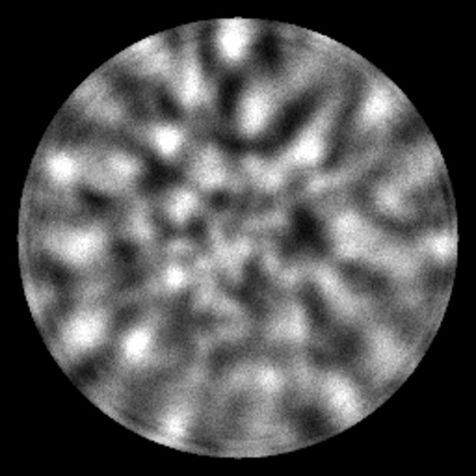
Fig. 6b. 40 nm underfocus.
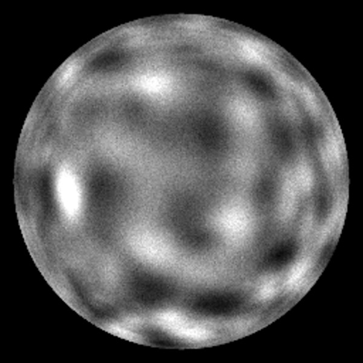
Fig. 6c. 12 nm from focus. The magnification rises toward the center.
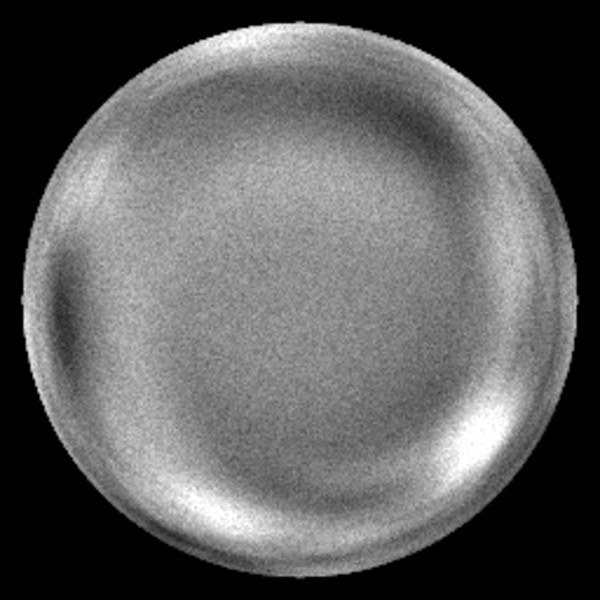
Fig. 6d. At focus, aberrations corrected. Uniform center to about 22 mrad.
Seeing with Electrons · TEM-view3
SOP-02 STEM alignmentStep 3 of 5
Step 3
Aberration correction
The corrector cancels the spherical aberration of the objective lens and the residual aberrations of the column. The goal is a Ronchigram whose uniform central region is at least as large as the condenser aperture.
Keep the probe on the thin amorphous area, slightly away from focus as the corrector software requires.
Run the aberration measurement in the corrector software (Ronchigram analysis or a tilt tableau).
Correct the low orders first: C1 and A1, then B2, then A2. Measure again after each correction.
When the low orders are within the software's targets, correct C3, A3 and the higher orders the software reports.
Repeat the measurement until the values are stable and within target.
Result. The measured aberrations are within the corrector targets, and the Ronchigram near focus is uniform out to at least the convergence semi-angle (Fig. 6d).
Recognizing residual aberrations
Aberration
Appearance in the Ronchigram near focus
A1, two-fold astigmatism
Fringes stretched along one direction; the two sides of focus stretch in perpendicular directions
B2, axial coma
The uniform region is off-center or one-sided
A2, three-fold astigmatism
Contrast with three-fold symmetry around the center
C3, spherical
Concentric rings; the uniform region is small
Note. Corrections interact. Correcting B2 often changes A1 and C1, so always measure again after a change.
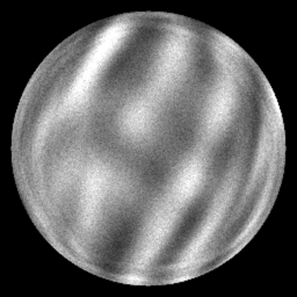
Fig. 7a. A1 = 12 nm.
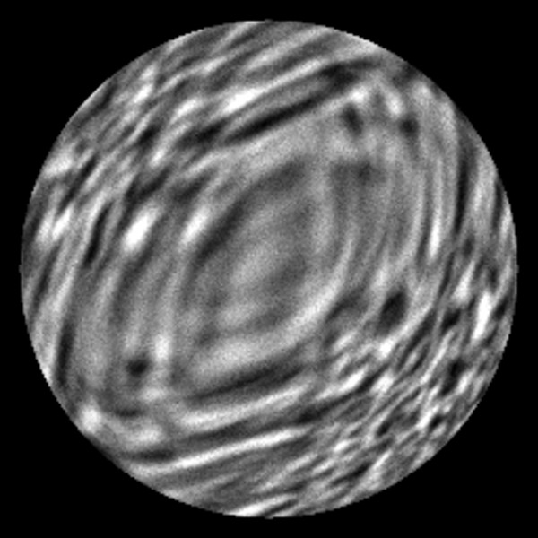
Fig. 7b. B2 = 700 nm.
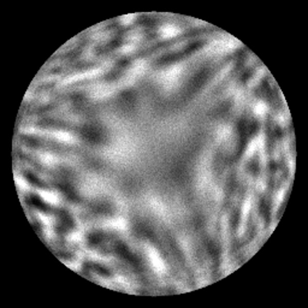
Fig. 7c. A2 = 600 nm.Fig. 7d. Corrected.
Seeing with Electrons · TEM-view4
SOP-02 STEM alignmentSteps 4 and 5 of 5
Step 4
Detectors
Retract the Ronchigram camera if it shares the beam path with the STEM detectors.
Select the camera length that gives the HAADF inner angle you need (at least three times the convergence semi-angle for Z-contrast imaging).
For BF or ABF imaging, choose the camera length so that the detector covers the intended part of the bright-field disk.
Start a fast scan on the specimen. Set the detector contrast and brightness so that the background is just above zero and the brightest features are not saturated. Check with the image histogram.
Result. The collection angles are known, and the image uses the detector's range without clipping.
Step 5
Final focus and stigmation
On the crystal, at the zone axis, use a small field of view and a fast scan.
Adjust focus (C1) for the sharpest columns.
If the columns are elongated in one direction, and the direction changes by 90° through focus, correct with the probe stigmator (A1).
If the columns show tails on one side, return to the Ronchigram and correct B2 (step 3).
Set the pixel size, dwell time and scan rotation for acquisition.
Result. Columns are round and sharp, and the image does not change shape through a small focus range other than by blurring evenly.
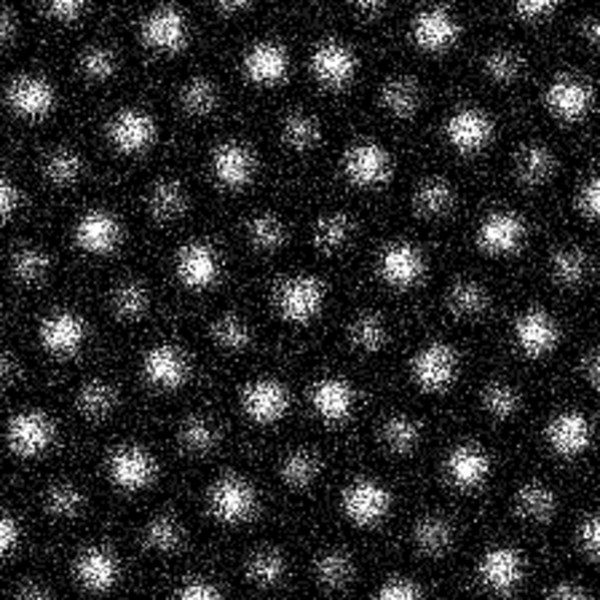
Fig. 8a. HAADF, SrTiO₃ [001], in focus and corrected.
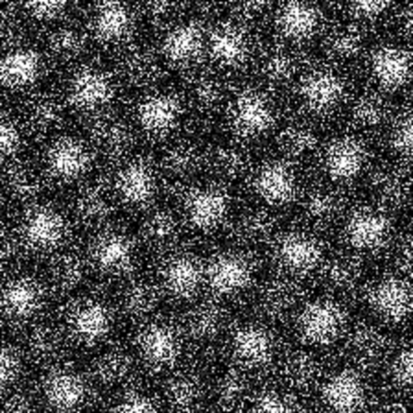
Fig. 8b. 5 nm defocus.
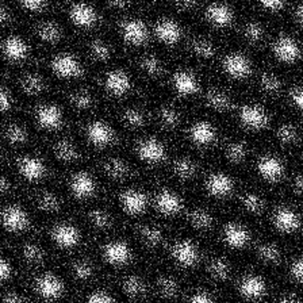
Fig. 8c. A1 = 3 nm. Columns elongated.
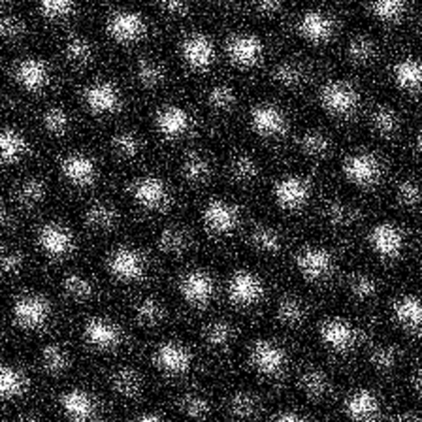
Fig. 8d. B2 = 200 nm. Columns with tails.
Seeing with Electrons · TEM-view5
SOP-02 STEM alignmentRecord and troubleshooting
Record
Item
Value or criterion
Initials
Convergence semi-angle
________ mrad
Probe current
________ pA
Ronchigram centered, aperture concentric
Uniform region concentric with aperture
Aberrations within corrector targets
A1 ____ nm, B2 ____ nm, A2 ____ nm, C3 ____ µm
Camera length and collection angles
________ mm; HAADF ____ to ____ mrad
Detector contrast and brightness
No clipping in histogram
Final focus and stigmation
Round, sharp columns
Troubleshooting
Observation
Likely cause
Action
No uniform region in the Ronchigram at any focus
Specimen too thick, or crystalline area under the probe
Move to a thinner amorphous area
Uniform region is off-center and stays off-center through focus
Ronchigram center or condenser aperture not aligned
Repeat step 2, items 4 and 5
Corrector measurement does not converge
Wrong defocus for the measurement, drift, or a contaminated area
Set the defocus the software asks for; wait for drift to settle; move to a fresh area
Image is noisy at the expected current
Detector gain too low, or wrong camera length
Repeat step 4
Columns look sharp in one direction only
Residual A1
Correct with the probe stigmator (step 5)
Columns show tails or a halo on one side
Residual B2, or specimen mistilt
Check the zone-axis tilt, then correct B2 on the Ronchigram
Image distorts during the scan
Drift or scan noise
Wait after stage moves; use a shorter dwell time with frame averaging
Seeing with Electrons · TEM-view6
Practice on TEM-view
The figures in this procedure were computed with TEM-view, a physics-based TEM and STEM simulator that runs in a web browser. Its training task “Corrector: tune the Ronchigram” sets random residual aberrations and reports how close you came to correcting them.
Open the training task
Scan the code with a phone, or open TEM-view and select Training.
Ronchigram
Every aberration coefficient in Fig. 7 has its own control, so each one can be seen in isolation.
STEM imaging
Change the convergence angle, camera length and detector, and see the effect on the image.
Research data
With your consent, anonymous practice sessions are used to study how people align microscopes.
SOP-02 STEM alignment, version 1.0, October 2026 For training. Follow your facility's procedures and the manufacturer's documentation. github.com/Advanced-EM/TEM-view